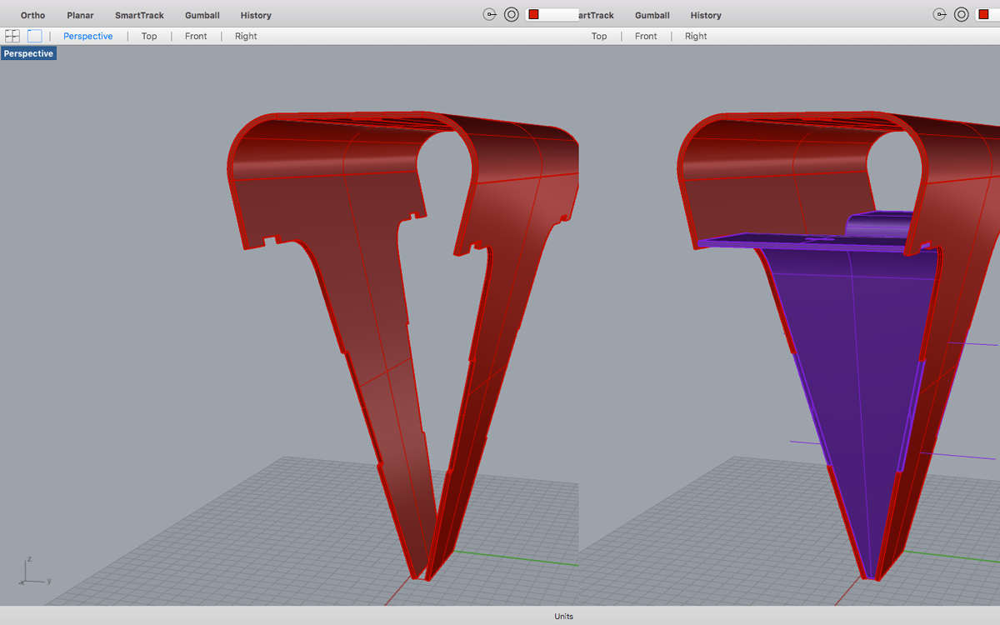

FAB ACADEMY 2017
FAB ACADEMY 2017
Week 3 - Design, Design and Digital Design - Part 2 Laser

Experiences
I started a bit late on this, trying to catch up with the rest of the colleagues,
At first I focused on the cardboard trying to figure a scale for a assemblage on this specific 7mm thick one.
I used my colleague Filipa definitions and previous experience and developed a quick experience on illustrator.

I had two goals, one of which I didn’t got to accomplish yet.
The first was to make a scale model of my near probe (GROUU new design), the one that would be stuck on the ground, near the plants, collecting all kinds of data;
The second was to come up with lost molds for blown glass, to use on a workshop next weekend (the weekenf after the assignement). (I will talk about this other time)
Kerf Bending
For both, kerf bending techniques and a deeper knowledge about it, besides grabbing samples and feeling amazed , would do a great job toward both goals.
The linear bend technique is easy and FIlipe already has very nice experience on the matter.
I was very interested on trying to bend MDF on more than one direction simultaneously.
I would use that for my lost moulds.
By experimenting with this set of samples, and cutting a few., I began having a lot of ideas and at the same time the clear conscience that to achieve a mould by wednesday was again an impossibility.
My Model
I than focused on the model.
I only had access to rhino and the complexity of the shape was also impossible to model parametrically in just a few days. So I modeled it it classis NURBS 3d modeling techniques.
After having the complete model, I separated the components on layers and began isolating the outer surface and unrolling it (with the Unrollsrf command).
On top of this, I applied a linear kerf pattern to the perimeter of the areas to bend.
I than used the Make2d command to these elements and exported it to the dwg format to cut.
At this time I noticed that the size won’t fit the area. Since scaling was an impossibility because it makes me lose tolerances and material thickness index on connections, I just cut the smaller parts, leaving the rest to cut on a bigger dimension laser cutter.
Here is the result: